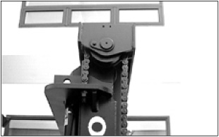

Attach a “Do Not Operate” or similar warning tag to
start switch or controls before servicing or repairing the lift
truck.
Do not start or service the lift truck when a “DO NOT
OPERATE” or similar warning tag is attached to the start
switch or controls.
Wear a hard hat, protective glasses and other protective
equipment as required by job conditions.
Know the width of your attachments so proper clearance can be
maintained when operating near fences, boundary obstacles, etc.
Do not wear loose clothing or jewelry that can catch on controls
or other parts of the lift truck.
Keep the lift truck, especially the deck and steps, free of
foreign material such as debris, oil tools and other items which
are not part of the lift truck.
Secure all loose items such as lunch boxes, tools and other
items which are not part of the lift truck.
Know the appropriate work-site hand signals and who gives them.
Accept signals from one person only.
Always use the overhead guard. The overhead guard is intended to
protect the lift truck operator from overhead obstructions and from
falling objects.
A truck that is used for handing small objects or uneven loads
must be fitted with a load backrest.
If the lift truck must be operated without the overhead guard in
place due to low overhead clearance, use extreme care. Make sure
there is no possibility of falling objects from any adjacent
storage or work area. Make sure the load is stable and fully
supported by the carriage and the load backrest extension (if
equipped).
Do not raise loads any higher than necessary and never raise a
load higher than 1830 mm (72 in) with the overhead guard
removed.
Always use load backrest extension when the carriage or
attachment does not fully support the load. The load backrest
extension is intended to prevent the load or any part of the load
from falling backwards into the operator's station.
When operating the lift truck, do not depend only on flashing
lights or back-up alarm (if equipped) to warn pedestrians.
Always be aware of pedestrians and do not proceed until the
pedestrians are aware of your presence and intended actions and
have moved clear of the lift truck and/or load.
Do not drive lift truck up to anyone standing in front of an
object.
Obey all traffic rules and warning signs.
Keep hands, feet and head inside the operator station. Do not
hold onto the overhead guard while operating the lift truck. Do not
climb on any part of the mast or overhead guard or permit others to
do so.
Do not allow unauthorised personnel to ride on the forks or any
other part of the lift truck, at any time.
When working in a building or dock, observe floor load limits
and overhead clearances.
Notice:
Inhaling Freon gas through a lit cigarette or other smoking method or
inhaling fumes released from a flame contacting Freon can cause
bodily harm or death. Do not smoke when servicing air conditioners
or wherever Freon gas may be present.
This Machine contains 0.5kg of HFC-134a, of which the CO2 equivalent
value is 0.715 tons.
The GWP of HFC-134a is 1,430.
This is only for the trucks with airconditioner option.
The above capacity information written on the film is attached to the
truck.
Never put maintenance fluids into glass containers. Use all
cleaning solutions with care.
Do not use steam, solvent, or high pressure to clean electrical
components.
Report all needed repairs.
When you handle DEF/ad-Blue, wear protective equipment and
observe Precautions for Handling.

Inspect the part of the chain that is normally operated over
the crosshead roller. When the chain bends over the roller, the
movement of the parts against each other causes wears.
Inspect to be sure that chain link pins do not extend outside
of the bore hole.
If any single link pin is extended beyond its connecting
corresponding link, it should be suspected of being broken inside
of its bore hole.
Inspect the chain anchor and the anchor links for wear.
Do not change any factory set adjustment values(including
engine rpm setting) unless you have both authorization and
training. Especially Safety equipment and switches may not be
removed or adjusted incorrectly. Repairs, adjustments and
maintenances that are not correct can make a dangerous operating
condition.
For any checkup, repair, adjustments, maintenance and all other
work concerning your forklift truck, please contact your Time
branch. We would like to draw your attention to the fact that any
secondary damages due to improper handling, insufficient
maintenance, wrong repairs or the use of other than original Time
spare parts waive any liability by Time.